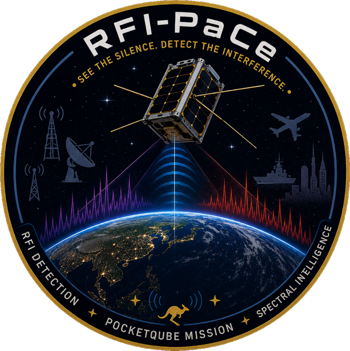

RFI PaCe (Radio Frequency Interference Payload CubeSat) is a Queensland team giving students and young engineers the chance to take part in real-world space projects, with the end goal of publishing research.

The team works with academic and industry partners including Griffith University, The University of Queensland, CSIRO, IEEE GRSS, Ansys and LEAP Australia, with sponsors PTC and PCBWay.
I run marketing, outreach and social media for the team, helping share the mission with the public, partners and sponsors. I am also planning to assist with mechanical simulation testing.
← Back to Projects